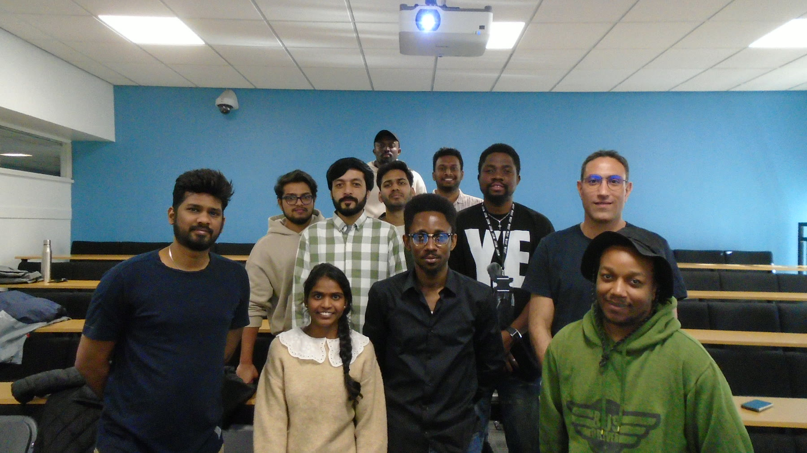

About Northumbria Construct
Our Story.
From an award-winning project to a professional engagement platform supporting construction and project professionals throughout their careers.

Our story
It began as a project.
Founded by Kufre Antia, Northumbria Construct bridges skills and generational gaps through meaningful local and international professional engagement.
What began as the sustainability strategy for an award-winning entry in the Association for Project Management (APM) Project Management Challenge has grown into an expanding community committed to professional development, innovation and knowledge exchange.
Today, Northumbria Construct connects universities, professional institutions and industry with professionals seeking knowledge, networks and opportunities to progress.
Founded within the historic Northumbria region and rooted in the academic environment of Northumbria University — an institution building towards a future defined by research excellence, industry relevance and the production of highly capable professionals — Northumbria Construct reflects that same direction of travel. Where the university turns knowledge into enterprise and graduates into practitioners, Northumbria Construct creates the connective tissue: the engagements, networks and applied research that carry that transformation forward beyond the lecture hall and into lasting careers.
From the Founder’s DeskThe beginning
Bridge the Gap.
The project ended. The mission continued.
Why do so many talented students struggle to transition successfully into industry despite years of education?
We investigated.
In 2025, a multidisciplinary student team entered the Association for Project Management (APM) Project Management Challenge. The Bridge the Gap project brought together students, academics, professional institutions and industry practitioners to understand the barriers separating higher education from professional practice.
Instead of allowing the findings to remain in a report, the project team turned its recommendations into an organisation.
Northumbria Construct became that organisation.
The findings
- Students lacked awareness of professional pathways.
- Networking opportunities were poorly understood.
- Many first-generation and international students struggled to navigate the UK professional environment.
- Industry wanted greater engagement with future professionals.
One project established the evidence.A continuing platform is turning it into action.
Who we are
Talent alone is not enough.
Across the construction and project professions, people at the early and middle stages of their careers can possess exceptional technical ability but still lack access to the networks, experiences, mentors and professional understanding that support successful careers.
Many are first-generation professionals.
Many are navigating international career pathways.
Many are managing important career transitions.
Northumbria Construct was established to change that.
We create structured opportunities connecting academia with industry, experienced professionals with emerging talent, and today’s leaders with tomorrow’s innovators.
Through engagement, mentoring, research, volunteering, industry collaboration and international partnerships, we help people understand not only what they can become—but how to get there.

Why we exist
More than a skills shortage.
The construction industry faces an engagement challenge.
Emerging and early-career professionals can enter the sector without clear access to professional institutions, chartership pathways, networking, volunteering, leadership development or career planning.
At the same time, experienced professionals possess decades of knowledge that often remain inaccessible to younger generations.
The generational gap.
By connecting people, ideas and opportunities, we create an environment where knowledge is transferred, confidence is built and future leaders emerge.
Our impact
Growing platform.
Measurable impact.
Northumbria Construct creates practical professional outcomes through access, experience, skills development and meaningful engagement.
01
Reached 93 students through structured engagement
02
Supported people towards employment and career progression
03
Developed practical skills and professional confidence
04
Created opportunities for first-time public speakers
05
Collaborated with leading professional institutions
06
Delivered debates, seminars and industry site visits
07
Established partnerships across the United Kingdom and Nigeria
08
Expanded access to professional networks and opportunities
Our philosophy
Professional success develops throughout a career.
It is strengthened through relationships, experience, service, leadership, curiosity, continuous learning and meaningful engagement.
Education provides knowledge.Engagement develops professionals.
Our model
Four interconnected pillars.
Each pillar supports a continuous journey from first connection to lasting professional impact.
Connect
Building meaningful relationships between professionals, industry, universities and professional bodies.
Develop
Providing practical experiences that support professional learning and career growth.
Innovate
Transforming research into practical solutions capable of improving project delivery.
Inspire
Creating environments where today’s professionals empower tomorrow’s leaders.
A leading global platform.
To become a leading global platform connecting academia, industry and professionals through engagement, innovation and collaboration, so that people at every career stage can access the knowledge, networks and opportunities they need to thrive.
Bridge. Inspire. Develop. Connect.
To bridge skills and generational gaps by inspiring, developing and connecting professionals through meaningful local and international engagement, industry collaboration, innovation and lifelong learning.
Opportunity should be accessible.
We exist so that no aspiring or developing professional is held back by limited access to information, opportunity or professional networks.
Our values
The principles behind the platform.
Purpose
Everything we do is designed to create meaningful impact.
Service
Leadership begins by helping others succeed.
Collaboration
The greatest challenges are solved together.
Professionalism
Integrity, accountability and excellence underpin every activity.
Innovation
We continually seek better ways to improve industry practice.
Inclusion
Talent exists everywhere. Opportunity should too.
Sustainability
Projects should create benefits that continue long after delivery.
Looking forward
From an early initiative to an international platform.
Our long-term ambition is to become an internationally recognised professional engagement platform supporting lifelong learning, research commercialisation, innovation and industry collaboration.
This ambition sits naturally within the broader direction of Northumbria University, whose vision is to be a research-rich, business-focused, professional university with a global reputation for academic excellence. Northumbria Construct reflects that same orientation — the Innovation Lab translates research into practical tools; our engagement model connects the academy with industry; and professionalism is not just a value we list but the purpose around which every activity is designed.
As we grow, our commitment remains unchanged: to bridge skills and generational gaps through meaningful local and international engagement.
Future initiatives
- Research and innovation laboratories
- Digital learning platforms
- International partnerships
- Project operating systems
- AI-enabled project tools
- Leadership programmes
- Global professional engagement
Our guiding principle
Together, we can
be the bridge.
Connecting people, knowledge and opportunity.